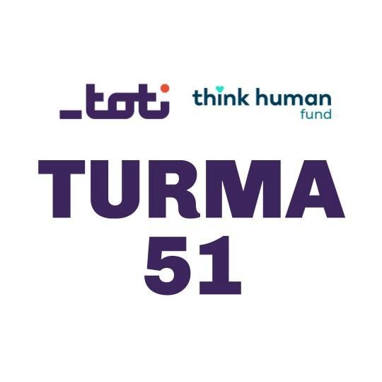

O começo da jornada de programação:
-
O que me fez escolher aprender programação não é apenas o fato de ser uma escolha inteligente para o mercado de trabalho, mas também um caminho para criatividade, inovação e crescimento pessoal. Com dedicação e prática, qualquer pessoa pode dominar essa habilidade e aproveitar seus benefícios!
-

Comecei minha jornada para aprender programação há alguns meses e o que me deixou mais entusiasmado foi a aceitação do meu pedido para participar do curso online gratuito pelo Toti educação. Isso me colocou no caminho certo para começar minha verdadeira jornada para me tornar um desenvolvedor Full Stack profissional, pois o curso começou no dia 25 de fevereiro de 2025 e terminará no dia 17 de julho de 2025.
Descobrindo as Melhores Formas de Aprender Full Stack:
Durante minha jornada de não mais do que alguns meses aprendendo programação, achei necessário organizar o tempo e definir metas e planos de estudo semanalmente para obter o máximo benefício e os melhores resultados possíveis. Como a área de programação é ampla, ela exige paciência e investimento de tempo para estudar bem, pesquisa contínua, anotar tudo o que for necessário durante a fase de aprendizado e aplicação para ter sua própria referência organizada, prática contínua, que o tornará experiente, e aproveitar a oportunidade de cometer erros durante a aplicação prática para aumentar a busca por soluções ou descobrir soluções alternativas durante o processo de pesquisa, além de aumentar seu círculo de conhecimento sobre programação, o que pode contribuir significativamente para a criação de ideias não convencionais. Também é muito importante não se contentar com uma única fonte de aprendizado, mas sim buscar fontes externas que ampliem sua compreensão e desenvolvam suas habilidades, além da importância de não parar de aprender, mas sim de se manter atualizado com todas as atualizações que ocorrem, o que pode encurtar seu tempo de aplicação e deixá-lo cheio de paixão pela pesquisa contínua, o que melhora sua saúde mental e física. Não importa sua idade, você verá que seu cérebro acompanha e se harmoniza com as ideias dos jovens. E com o tempo, posso descobrir outras etapas que posso seguir durante os estágios de aprendizagem.
Obstáculos e desafios:
Para alguém como eu, que não tem experiência em programação e está aprendendo do zero, subir o primeiro degrau da escada será difícil, mas qualquer dificuldade, quando dividida em pequenos problemas e resolvida um por um, ajudará você a seguir em frente em seu caminho. Isso também se aplica à importância de dividir o projeto em pequenas partes e pequenas tarefas para que você possa superar as dificuldades e os desafios que enfrenta.Também é muito importante falar sobre o caos dos começos, pois levei muito tempo para entender como as coisas funcionavam e como lidar com elas. Além disso, a barreira da língua portuguesa não tem sido fácil para mim desde que cheguei ao Brasil e ainda é um desafio para mim, mas os vídeos educacionais me fazem melhorar ao descobrir novas palavras ou termos de programação enquanto os assisto, assim como as reuniões semanais ao vivo dentro do curso, pois minha busca por progredir na melhoria da minha língua portuguesa nos níveis oral, escrito e auditivo não é menos importante do que aprender programação como uma ferramenta importante que usamos para alcançar uma comunicação eficaz e bem-sucedida com outras pessoas.
Entre Conquistas e Desafios: Reflexões da jornada:
- Eu gosto de continuar minha jornada de aprendizado de programação, o que me fez perceber que não estou apenas interessado em aprender programação, mas também adoro a aprender e descobrir novas informações dela. Pois não importa quão difícil seja a jornada ou quanto tempo leve, mas com persistência eu certamente alcançarei meu objetivo.
- O único desafio que enfrento até agora é minha corrida contra o tempo. Se eu pudesse desejar que algo acontecesse, eu desejaria que o dia tivesse mais de 24 horas. Css3 leva mais de uma semana para aprender, pois é uma linguagem com muita informação que requer mais tempo para ser totalmente abordada com prática. Por outro lado, passei a valorizar mais cada minuto que passa e sempre tento aproveitar ao máximo o tempo que gasto aprendendo e praticando.
- É realmente interessante que eu ache a área da programação, principalmente como uma novata nela, que exige pesquisa constante e retorno às referências privadas ou externas do programador, além de trabalhar e treinar com uma equipe de programadores de diferentes idades e experiências, o que contribui para aumentar a experiência de todos, compartilhando experiências e discutindo problemas. Dessa forma, o cérebro permanece na fase da juventude e não envelhece, pois é preciso buscar informações continuamente e encontrar soluções para os problemas que se enfrentam. Isso cria uma espécie de desafio em nível individual ou coletivo para alcançar o desenvolvimento profissional contínuo. Além da pesquisa uma informação específica, você certamente tem uma grande oportunidade de descobrir outras informações úteis durante o processo de pesquisa.
- Também acho que as avaliações que faço me mostram o grau da minha compreensão de cada módulo, e os exercícios e projetos que faço que são necessários no curso ou realizo tarefas extras sozinha. Tudo isso melhora minha compreensão do módulo novo e o grau em que os módulos anteriores se relacionam com ele por meio da implementação de projetos iniciais que serão o início de projetos maiores e melhores no futuro.
- Eu estou feliz por ter esta oportunidade de aprender programação e me considero uma pessoa de sorte,pois ganhei novos colegas e amigos, além disso quanto mais terminei um módulo deste curso me sinto grato novamente a todos os responsáveis por este curso.
Metas de curto e longo prazo:
- Concluir o curso de programação Full Stack, ao mesmo tempo em que aumentava minha experiência na área de programação.
- Encontrar uma oportunidade de trabalho que potencializasse o desenvolvimento de minhas habilidades e experiência em programação, bem como um ambiente de trabalho que facilitasse mais minha integração à sociedade brasileira.
- Continuar o caminho do aprendizado de programação até a profissionalização.
- Continuar aprendendo a língua portuguesa até dominá-la de forma mais próxima de um falante nativo.
- Contribuir para o ensino de cursos de programação para refugiados e imigrantes.
Uma cantinha lateral das expectativas futuras:
Acredito que enquanto eu sonhar que eu vou chegar lá, com esforço e perseverança, certamente chegarei lá. Minha experiência atual na criação desta página, embora seja limitada e simples, mas com o passar do tempo minha experiência aumentará e assim poderei desenvolvê-la adicionando características e formatos que sejam compatíveis com ela. De qualquer forma, qualquer esforço feito, por menor que seja, não é algo que não mereça elogios, assim como pela futura forma que minha página tomará no futuro.